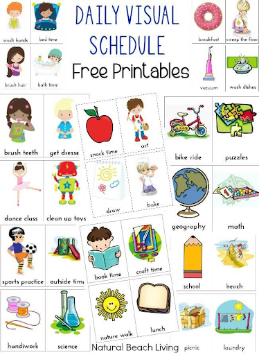
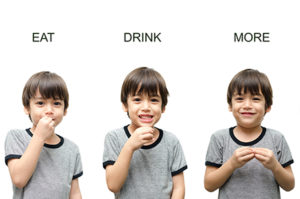
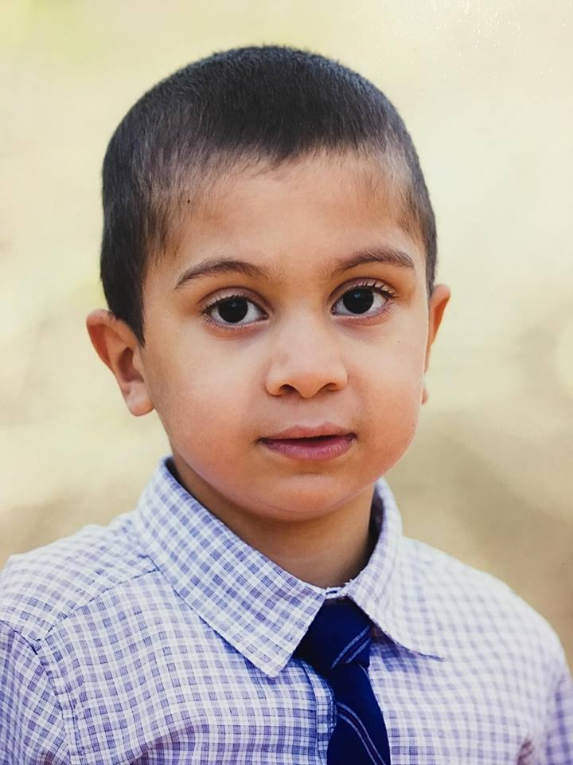
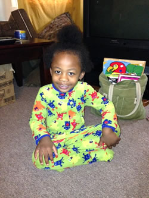

Visuals supports can be pictures, objects, sign language or text. They can come in a variety of forms. Some examples of programs that generate visuals are:
Boardmaker (Mayer-Johnson) – This popular software generates Picture Communication Symbols (PCS) and other graphics. The draws are line drawings and not actual photos. Boardmaker does not work for every child because some children do not understand what the line drawings mean.

Communicate: SymWriter (formerly Writing with Symbols) – A different approach to writing, reading and literacy development, this program is a talking word processor that matches symbols to words to help students of all ages and abilities increase comprehension and fluency. Writing activities challenge students with a focus on creating summaries, biographies, letters, persuasive papers, reports and reviews. A great tool for students with limited spelling abilities or those who have trouble accessing a keyboard, SymWriter comes equipped with symbol-supported grids for writing, making independent engagement in assignments and projects possible for all students.
Read more
Step 2:The sign language for children with autism
Sign language for children with autism may be a helpful tool to improve communication. Children with autism have a hard time connecting spoken words to objects. Your child may often be frustrated because he cannot communicate effectively. As a parent, you may become frustrated with behaviors your child uses to get his point across. Teaching signed words to your child can give him a way to make his needs known in a more socially acceptable manner. Using sign language with your child may help develop open communication skills. It can provide a way for him to communicate his needs that is not crying or
throwing tantrums, thus little by little eliminating stressful behaviors and promoting more effective communication. While some children on the spectrum might benefit, others may not. This is purely based on the fact that everyone is different, and we learn in different ways. Some people are auditory learners, while others are visual, physical, or reading- and writing- based learners. It is important to understand that not all children with autism are visual learners.
How do I learn sign language?
Parents and caregivers can learn sign language in many different ways, including:
- Take a class at your local community college or online
-Check out books or websites on Baby Sign Language
-Research sign language on YouTube
Some Signs To Get You Started!

If signing is something you are considering, here are a few signs to get you and your child started. “Eat” – Make your fingers touch your thumb like you would do if you were making a sock puppet talk and tap on your bottom lip. Don’t forget to say the word “Food” or “Eat” as well as showing them a picture of food. You can practice this during dinner or lunch. “Drink” – Pretend you are holding a cup and tip the imaginary cup towards your mouth to sign “Drink” “More” – Shape your hands as if you were eating a sandwich and bring the tips of your fingers together.
Read more
Success Stories
Yousef Shrem is a 7 years old child. with his mother can make a bridge of communication with pictures and encouragement. now he can say some words and explain his needs.
Read more
